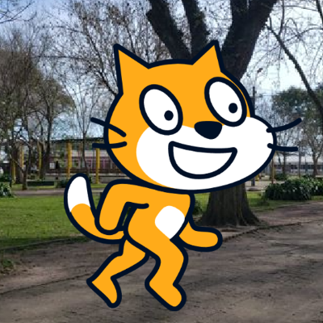

Gato en la plaza de Cebollatí

Este proyecto se desarrolla en la plaza de Cebollatí, Rocha. Al presionar la flecha izquierda, el personaje se empieza a mover.
Ver en ScratchA continuación comparto algunos proyectos hechos en Scratch. También vas a encontrar desafíos para practicar programación por bloques.
Este proyecto se desarrolla en la plaza de Cebollatí, Rocha. Al presionar la flecha izquierda, el personaje se empieza a mover.
Ver en ScratchEl Gato de Scratch hace una doble vuelta a carnero en el aire sobre un sistema de coordenadas. Ideal para enseñar movimientos y rotación.
Ver en ScratchUna nave se mueve por un eje cartesiano. Ideal para trabajar eventos, variables y detección de colisiones.
Ver en ScratchUna divertida animación para explicar el sistema binario usando personajes y cambios de disfraz.
Ver en ScratchHacé que un personaje diga su nombre, su comida favorita y qué le gusta hacer usando decir y esperar.
Programá al personaje para que reaccione al presionar flechas del teclado usando eventos y control.
Al hacer clic en un objeto, debe desaparecer y sumar puntos con una variable Puntos.
Hacé que tu personaje camine o baile usando próximo disfraz y mover.
Creá una conversación entre dos personajes usando decir y enviar mensaje.